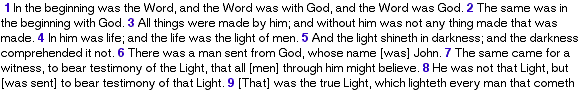
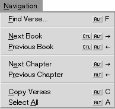
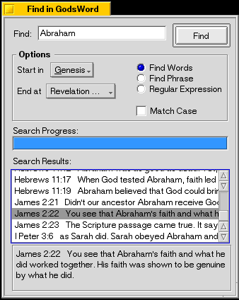
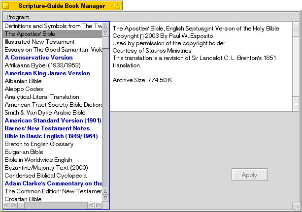

The Text ViewThe text view shows the current chapter in the selected bible or commentary. Simply mark any text with your mouse and drag it to another window, like your notes or Gobe Productive. Greek texts will be displayed properly if you have installed a Greek font. From time to time, the text view may be empty. This is normally because the particular book or chapter is not available in the module you are looking at. An example of this would be trying to look at the book of Genesis in an Bible module that is only New Testament. A commentary with no comments on a particular chapter will also exhibit this behavior. The ToolbarWith the toolbar you can select any installed Bible or commentary. Additionally, it also allows you to choose a particular book, chapter, and verse. The selected verse will be highlighted for you, as well. Also, there is a Notes button which will open a document to hold any study notes you might want to enter. Should you need to find this file, they are stored in the notes folder of the settings directory from scriptureguide. Cou can find it at /boot/home/config/settings/scriptureguide/notes. This folder will be generated once you start the Scripture Guide app. The Menu
The Program menu is for opening and closing windows and quitting Scripture Guide. Also listed are keyboard shortcuts. For example, you can hold the Alt key and hit N to open a new window. This works for most items in any of the menus. The Navigation displays various ways which you can get around in Scripture Guide. Select All highlights the current chapter. Copy Verses will copy any highighted text and copy it to system clipboard. This will allow you to transfer it to another program by choosing Edit|Paste in that program. As mentioned above, most items in the menu have a keyboard shortcut. While it is possible to use the menus, learning the shortcuts for most of the items in the Navigation menu will allow you to quickly get around. Hold the Alt key and hit the left or right cursor keys to change chapters. Tapping left or right while holding Control and Alt will jump to the next or previous book in a text, such as from Exodus to Leviticus or Genesis. Alt-F will open the Find window. 
Because an effort has been made to choose good options from the start, there are only two. Unchecking 'Show Verse Numbers' hides the verse numbers. This is particularly nice when reading a devotional-style Bible module or a commentary. This menu will also allow you to choose a font for the text you are viewing. The Find WindowScripture Guide possesses considerable flexibility and power in its ability to search for text. In the pictured example, we have done a search for the name Abraham in all books of the Bible. Search results are displayed in the white box, and the entire verse and the two surrounding verses are visible in the bottom box. Double-clicking on any search result will open a new window displaying that verse. Search OptionsWithin this box, you can choose search settings to make your search more specific. You can choose a range of books within a text, such as choosing Matthew through Acts. Checking the box marked 'Match Case' will make the search pay attention to capitalization. You can also choose to search for any verses having any of the words, the exact phrase, or something called a Regular Expression. Regular Expression SearchesRegular Expressions are a complex way of searching for patterns which were developed for the UNIX operating system. By using a string of characters (which looks like little more than gibberish to those unfamiliar), it is possible to search for just about anything. For example, to look for all words beginning with P, the search term would be P[^ ]+ . Entire books have been written on Regular Expressions and, as such, are beyond the scope of this manual. If you would like to learn more about them, click here As a quick aside, the forward slashes used on both sides of a regular expression (i.e. '/') are not needed when searching in Scripture Guide. ShortCutsYou can select multiple verses and use alt+c to copied the selcted verses. Installing Bibles and CommentariesNew to the 0.8 release of Scripture Guide is a module manager which allows you to quickly and easily download and install new texts. Shown below is a picture of the most recent version of the manager. Clicking on a name will show information about a text, including its size. Double-clicking on a name will schedule a text to be installed or, if it is currently installed, to be removed. Texts which are installed are shown in bold, blue type. Once you have chosen which text modules you would like to install and/or remove. click 'Apply' and wait while the manager does its work. Manual InstallationIf you prefer to do your own installation, it is not very difficult, either.
 Scripture Guide requires a Greek font to correctly view modules in Ancient Greek. Currently, only the Aristarcoj font is supported. Download it and move it in the directory /boot/home/config/non-packaged/fonts/ttfonts/. Once it has been moved here, choose Preferences|Fonts from the BeOS menu and then click the 'Rescan' button. If Scripture Guide is running after you have done this, restart it and Greek modules will be displayed properly. Please respect the license under which this font is provided. |